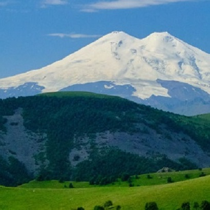

Самые высокие горы мира
Эльбрус, Россия
Список самых высоких гор мира
Эльбрус, Россия

Самая высокая гора страны находится на стыке двух республик. Она расположена в Боковом хребте Кавказских гор, на границе Кабардино‑Балкарии и Карачаево‑Черкесии.
Ближайшие к вершине большие города — Кисловодск, Нальчик и Минеральные Воды.Эльбрус — древний спящий вулкан, который сформировался примерно миллион лет назад. У горы две вершины: сначала образовалась первая — западная (5642 метра),
потом — восточная (высшая точка — 5621 метра).
Эльбрус сложен из застывшей лавы, пепла и вулканического туфа, а возраст наиболее древних пород — примерно три миллиона лет.
Учёные считают, что за свою историю он извергался около четырёх раз. Самое сильное извержение произошло порядка 225 тысяч лет назад, а
самое позднее — две тысячи лет назад. Переживать не стоит — по мнению учёных, вулкан вряд ли выйдет из спячки в ближайшие 2-3 столетия.